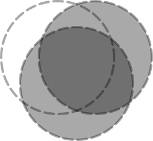

4.4 Component Operations
函数
(flomap-ref-component fm k) → flomap
fm : flomap k : Integer
Extracts one component of a flomap and returns it as a new flomap.
Raises an error if k is out of bounds.
Use this, for example, to extract the A and R components from an ARGB flomap:
> (flomap->bitmap (flomap-ref-component fm 0)) > (flomap->bitmap (flomap-ref-component fm 1))
函数
(flomap-take-components fm k) → flomap
fm : flomap k : Integer
Extracts the first k components and returns them as a new flomap.
Raises an error if k is out of bounds.
例如：
> (flomap->bitmap (flomap-take-components fm 2)) 
函数
(flomap-drop-components fm k) → flomap
fm : flomap k : Integer
Extracts all but the first k components and returns them as a new flomap.
Raises an error if k is out of bounds.
Use this, for example, to operate on only the RGB channels of an ARGB flomap:
> (flomap->bitmap (flomap-append-components (flomap-take-components fm 1) (fm* 0.25 (flomap-drop-components fm 1))))
函数
(flomap-append-components fm0 fm ...) → flomap
fm0 : flomap fm : flomap
Appends the components of the given flomaps pointwise.
Raises an error if not all flomaps are the same width and height.
例如：
> (equal? fm (flomap-append-components (flomap-take-components fm 2) (flomap-drop-components fm 2))) #t
> (flomap-append-components (make-flomap 1 10 10) (make-flomap 3 20 20)) flomap-append-components: expected same-size flomaps; given
sizes 10×10 and 20×20
This function could behave according to the Conceptual Model—